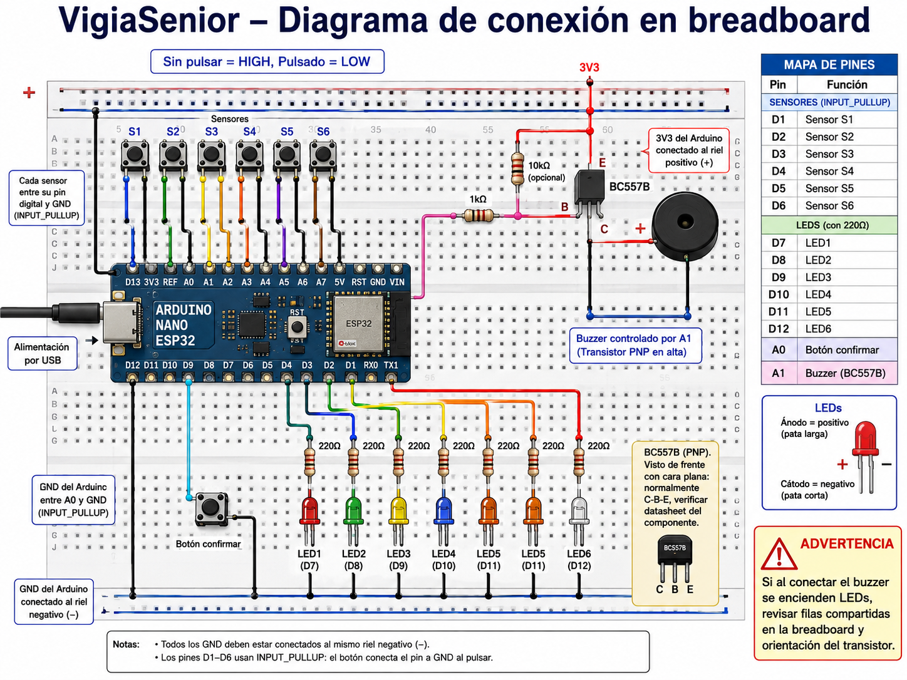

🧭 Introducción
Este repositorio recoge una programación de aula del CFGS de Desarrollo de Aplicaciones Web (DAW) para el módulo 0613 · Desarrollo web en entorno servidor. En esta propuesta didáctica se desarrolla el proyecto VigiaSenior, articulado a partir de una unidad de trabajo basada en el diseño e implementación del backend de un pastillero inteligente, pensado para apoyar el seguimiento de la medicación en personas mayores.
La propuesta parte de un problema real y reconocible: La dificultad de mantener rutinas de medicación seguras, controladas y registrables en contextos de envejecimiento, dependencia o supervisión familiar. A partir de ese contexto, el alumnado desarrolla una solución tecnológica en la que convergen análisis, modelado de datos, servicios web, lógica de negocio, persistencia, documentación e integración básica con hardware o simulación.
- Servir como programación de aula transferible, para que otro docente pueda comprenderla y aplicarla con pocas modificaciones.
- Actuar como repositorio técnico del proyecto, recogiendo backend, hardware, simulación, documentación técnica y materiales de apoyo.
🎓 Normativa y contexto académico
Para elaborar esta propuesta se ha tomado como referencia la normativa del sistema educativo y de Formación Profesional, así como la normativa específica del título de Técnico Superior en Desarrollo de Aplicaciones Web y la normativa curricular aplicable en la Comunidad Valenciana.
La normativa completa puede consultarse en Contextualización y marco legal.
A nivel curricular, el proyecto encaja bien con el módulo porque reúne varias tareas habituales del desarrollo backend: Crear servicios web, trabajar con una base de datos, organizar la lógica de negocio y diseñar una API. El componente IoT se utiliza como contexto del problema, no como objetivo principal, y sirve para dar sentido a los eventos que recibe el sistema. Además, el alumnado debe documentar lo que hace y defender las decisiones tomadas en la exposición final.
🧩 Proyecto
En esta propuesta se desarrolla VigiaSenior, un backend para un pastillero inteligente pensado para ayudar en el seguimiento de la medicación en personas mayores. Se trata de un proyecto que parte de una necesidad real y da sentido a los contenidos del módulo mediante una aplicación práctica con trasfondo social.
Su encaje dentro de Desarrollo web en entorno servidor es claro, ya que permite trabajar servicios web, bases de datos, lógica de negocio, diseño de endpoints e integración de eventos procedentes de un dispositivo. En lugar de abordar estos contenidos por separado, se trabajan de manera conjunta dentro de un proyecto único, más cercano a una situación real de desarrollo.
🎯 Objetivos del proyecto
Con esta propuesta se pretende que el alumnado sea capaz de:
- Analizar un problema real y convertirlo en requisitos técnicos.
- Diseñar el modelo de dominio de una aplicación basada en eventos.
- Estructurar una API coherente y documentada.
- Implementar la persistencia de datos mediante base de datos relacional.
- Desarrollar lógica de negocio en servidor.
- Integrar software y hardware en una arquitectura sencilla de IoT.
- Documentar el proyecto de forma clara, trazable y reutilizable.
- Presentar el proyecto y explicar por qué se han tomado las principales decisiones técnicas y didácticas.
🚀 Resultado esperado del proyecto
Al finalizar el proyecto, el alumnado habrá desarrollado una primera versión funcional del backend de VigiaSenior, capaz de gestionar la planificación diaria de tomas, recibir eventos simulados de un dispositivo y registrar lo que ocurre durante el seguimiento de la medicación. El proyecto se apoya en un flujo funcional sencillo, pero suficientemente sólido para trabajarlo en el aula:
- Consulta de planificación diaria.
- Recepción de eventos del dispositivo.
- Registro de apertura de cajita.
- Confirmación de la toma.
- actualización del estado de la toma.
- Generación de alertas.
- Consulta básica de seguimiento e histórico.
Endpoints principales del backend
GET /health
GET /api/devices/:deviceId/schedule/today
POST /api/devices/:deviceId/events
GET /api/patients/:patientId/dashboard
GET /api/patients/:patientId/alerts
PATCH /api/alerts/:alertId/resolve
🔌 Hardware del proyecto
La parte física se plantea en una versión simplificada y asumible para aula, basada en Arduino Nano ESP32. Se entrega al inicio del proyecto porque la finalidad principal de la propuesta es el backend, no la electrónica ni la configuración hardware. Se ha elegido una placa basada en ESP32, como Arduino Nano ESP32, porque ofrece un equilibrio muy adecuado entre coste, tamaño y conectividad. Es una opción asequible y fácil de conseguir, también en versiones compatibles de bajo coste, lo que la hace razonable para el contexto academico. Además, su tamaño reducido encaja mejor en un prototipo de pastillero que otras alternativas más voluminosas, y además integra Wi-Fi y Bluetooth en la propia placa. Esto simplifica mucho el proyecto, ya que evita recurrir a módulos externos adicionales o a soluciones más costosas y complejas, como podría ocurrir con otras placas o con una Raspberry Pi.
Configuración del prototipo
- 6 pulsadores o sensores para simular la apertura de las cajitas;
- 6 LEDs de estado;
- 1 botón de confirmación;
- 1 buzzer;
- conexión Wi‑Fi en la versión con backend.
Esquema Propuesto

🗂️ Estructura del repositorio
La estructura del repositorio se ha organizado para que la parte didáctica y la parte técnica convivan sin mezclarse.
VigiaSenior/
├── alumnado/
├── profesorado/
├── presentacion/
├── implementacion/
├── LICENSE
└── README.mdGuía didáctica, contextualización, programación de aula, currículo, metodología, DUA, instrumentos y rúbricas.
Dossier, enunciado, fases y entregables, tutoriales y plantillas de análisis, API y documentación.
Backend, documentación técnica, hardware, prompts, recursos auxiliares y simulación.
🧰 Materiales incluidos
- guía didáctica
- programación de aula
- contextualización
- currículo y relación RA/CE
- metodología y DUA
- evaluación y rúbricas
- dossier del proyecto
- enunciado
- fases y entregables
- tutoriales
- plantillas
- backend
- sketches Arduino
- esquemas de conexión
- documentación técnica
- recursos de simulación
🛠️ Flujo de trabajo recomendado
El proyecto se plantea como un trabajo progresivo. Primero se entiende el problema y se concreta qué debe hacer el sistema. Después se identifican los datos principales, los eventos que puede recibir el backend y las reglas básicas que debe aplicar. A partir de ahí, el alumnado diseña una primera versión de la API, implementa el backend por partes y va comprobando su funcionamiento con pruebas sencillas. La simulación del dispositivo o el montaje físico sirven para dar contexto al proyecto, pero no son el centro de la evaluación. La parte final se dedica a ordenar la documentación, revisar el trabajo realizado y preparar una presentación breve en la que cada grupo explique qué ha construido, qué decisiones ha tomado y qué partes mejoraría si continuara el desarrollo.
🧠 Metodología de aula
La propuesta se apoya en una metodología basada en:
- Aprendizaje basado en proyectos
- Resolución de un problema significativo
- Trabajo cooperativo en grupos de 3
- Desarrollo incremental por fases
- Uso de GitHub como herramienta de trazabilidad y documentación
- Revisión progresiva de entregables
La parte técnica no se plantea como una simple acumulación de código, sino como un producto que debe ser comprensible, justificable y transferible.
📏 Evaluación
La evaluación no se plantea como una simple comprobación de si el backend “funciona” o no. El funcionamiento técnico es importante, pero se valora dentro de un conjunto más amplio de evidencias que permiten comprobar cómo ha trabajado el grupo y cómo ha justificado sus decisiones. A lo largo del proyecto se recogerán distintas evidencias evaluables: el análisis inicial del problema, el diseño del modelo de datos, la definición de la API, la implementación del backend, las pruebas realizadas, la documentación técnica y la presentación final. Estas evidencias permiten valorar especialmente:
- Si el alumnado comprende el problema planteado y lo traduce a una solución técnica viable
- Si el modelo de datos, la API y la lógica del backend son coherentes entre sí.
- Si el grupo prueba el sistema y corrige errores de forma razonada
- Si la documentación permite entender el trabajo realizado
- Si la presentación final explica con claridad las decisiones tomadas, las dificultades encontradas y las posibles mejoras
Las rúbricas y criterios de evaluación se encuentran en la carpeta profesorado/.
🧾 Cómo leer este repositorio
Si es la primera vez que accedes al proyecto, el orden de lectura recomendado es:
⚖️ Licencia y reutilización
El repositorio incluye una licencia en el archivo LICENSE.
En caso de reutilización docente, se recomienda mantener la atribución del proyecto y respetar el carácter académico de los materiales, especialmente de aquellos concebidos como propuesta transferible para aula.
✅ Cierre
VigiaSenior se plantea como una propuesta de aula con valor técnico, sentido social y estructura pedagógica clara. El objetivo no es únicamente construir un backend funcional, sino convertir ese desarrollo en una experiencia de aprendizaje coherente, bien documentada, evaluable y reutilizable.
En este sentido, el repositorio pretende ser algo más que un contenedor de archivos: busca actuar como una maleta pedagógica y técnica, preparada para ser comprendida, adaptada, aplicada y defendida.